Inspired by the objectives and vision of IIC, a MHRD initiative, we have established IIC TMSL. This cell will be conducting various innovation and entrepreneurship related activities along with organizing periodic workshops, seminars and interactions with entrepreneurs and innovators. Students will get a chance to showcase their talents by participating in various events like Hackathons, idea competitions etc.


IIC TMSL is currently working with 50+ members and 10 students co-ordinators. We also have some external members to guide us. Under any circumstances the team is there to support you and your innovative start-up idea to evolve into a business. We are there to help, build and grow a start-up ecosystem with your innovations & contributions.